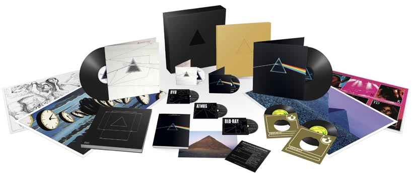
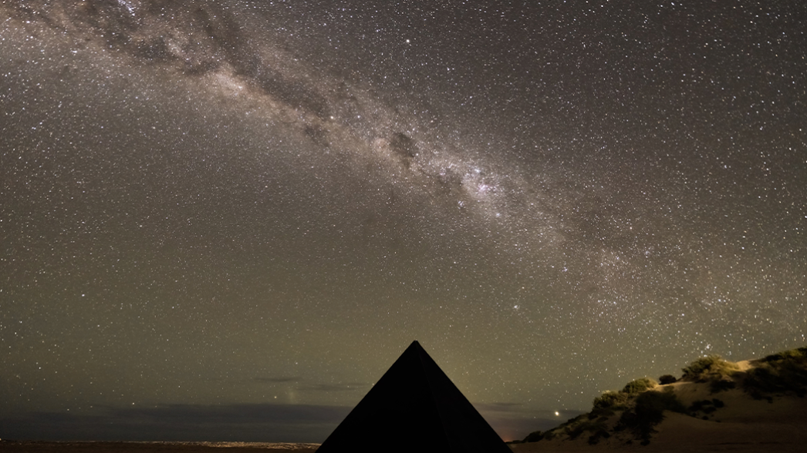
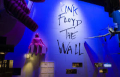

NEWS

Celebrating the anniversary of the iconic album "The Dark Side of the Moon"
One of the most iconic and influential albums ever, Pink Floyd’s ‘The Dark Side Of The Moon’ continues to find new audiences globally. This year, to celebrate its 50th Anniversary, a new deluxe box set will be released on 24th March....
Read more

PINK FLOYD commemorates 50 years of THE DARK SIDE OF THE MOON with a total solar eclipse...
Pink Floyd is celebrating the 50th anniversary of its iconic album THE DARK SIDE OF THE MOON with a listening event timed to a rare total solar eclipse at Ningaloo (Nyinggulu) Marine Park....
Read more

Listen: Pink Floyd’s ‘Another Brick In The Wall’ recreated by scientists using recorded brain waves
Scientists have reconstructed Pink Floyd’s “Another Brick in the Wall” through recordings of epilepsy surgery patients’ brainwaves as they listened...
Read more